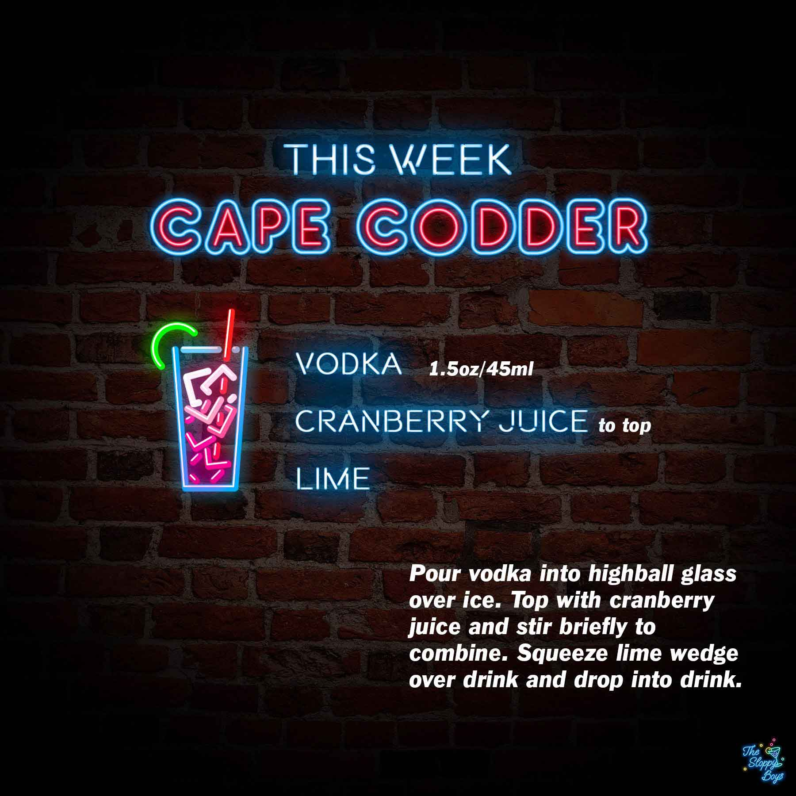

Sloppy Drinks
Podcast
About

Cape Codder
Ingredients
Vodka (1.5oz/45ml)
Cranberry Juice (to top)
Lime
Steps
Pour vodka into highball glass over ice.
Top with cranberry juice and stir briefly to combine.
Squeeze lime wedge over drink and drop into drink.
Notes
Episode 38 - Cape Codder (July 9, 2021)
Artwork by The Sloppy Boys